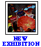
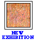
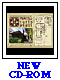
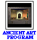

Dale Chihuly: Installations 1964-1997
March 2-May 11, 1997
Dayton Hudson Gallery

Reginal Sanders
March 6-April 20, 1997
Minnesota Gallery
Knocking Down the Walls
Thanks to the generous support of our members, the museum is getting bigger and better than ever before!

New CD-ROM!
"A Prairie School Gem: The Virtual Tour of The Purcell-Cutts House"
for Macintosh and Windows
$19.95 (plus $3.00 shipping and handling)

New Interactive Media Program! "Ancient Art of the Mediterranean"
Ancient Gallery
Curriculum Materials: World Mythology in Art
Take a moment to explore the new on-line preview of the World Mythology in Art slide set. This extensive project allows you to review all the materials contained in the slide set in a highly interactive, cross referenced format right here on the internet. Over 24 high quality images and 60 minutes of downloadable stories are now available to you 24 hours a day. Try it out and tell us what you think.